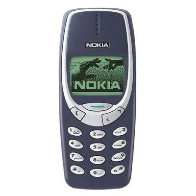

Le célèbre téléphone NOKIA 3310 est toujours en vente. Il n'est absolument pas tactile. Pour rédiger un SMS, il faut appuyer un certain nombre de fois sur les touches sur lequelles sont marquées les lettres correspondantes, c'est ce que l'on appelle la saisie multitap. Par exemple, si on appuie une fois sur la touche 2, on obtient la lettre A, deux fois pour la lettre B et trois fois pour la lettre C, si on appuie quatre fois, on obtient le chiffre 2. Le dessin du clavier reprend la disposition des lettres sur le clavier et la touche 0 désigne l'espace.
Pour écrire le mot BONJOUR, l'utilisateur doit composer la séquence suivante : 22 666 66 5 666 88 777 (multitap1) ou bien 2*23*62*653*62*83*7 (multitap2).
Vous devez réaliser les tâches suivantes (l'ordre importe peu) :
multitap1 et multitap2 pour coder un message en clair en séquence de touchesantitap1 et antitap2 pour passer d'une séquence de touches à un message en clairdevinette pour que le test passeLe programme qui vérifiera votre code utilisera des mots différents et un fichier différent mais il n'y aura pas de caractères comme l'espace ou des nombres dans les séquences testées.